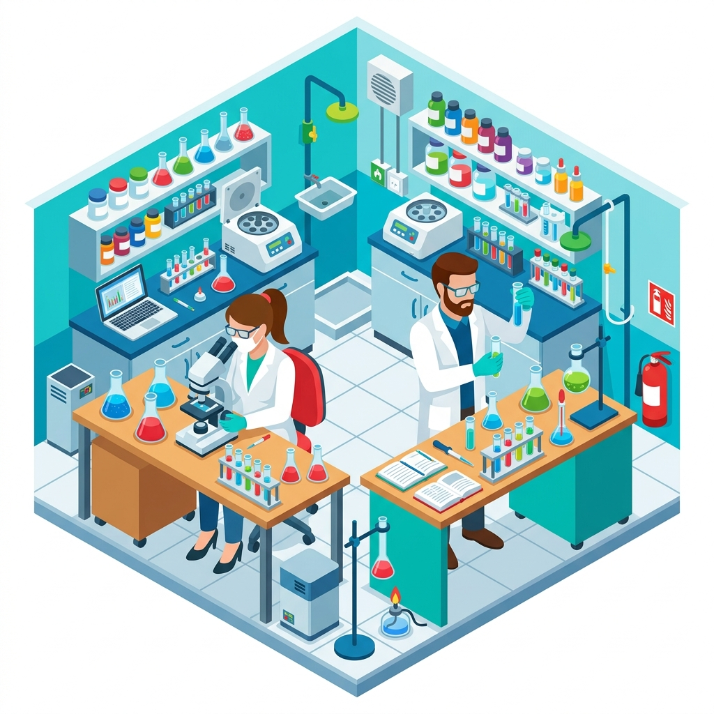

Análises clínicas em Barcelos
Laboratório Amazonas
Cuidar da sua saúde começa por respostas claras. Em Barcelos, o Laboratório Amazonas une acolhimento, coleta segura e exames essenciais para acompanhar cada fase da sua vida.
Coleta com orientação
A equipe informa o preparo correto para cada exame antes da coleta.
Exames de rotina e especiais
Do hemograma ao toxicológico, com encaminhamento claro para cada necessidade.
Cuidado de Barcelos
Um laboratório próximo, com linguagem simples e atenção à realidade da comunidade.
Serviços

Um painel completo para prevenir, investigar e acompanhar
Atendemos exames laboratoriais de rotina, avaliações hormonais, vitaminas, testes especiais e demandas ocupacionais. Para exames com preparo específico, fale com a equipe antes de ir ao laboratório.
- Hemograma
- Glicose
- Colesterol
- Triglicerídeos
- Ácido úrico
- Transaminases
- Ureia
- Creatinina
- Urina
- Fezes
- Vitaminas
- Hormônios
- Biópsias
- Teste do pezinho
- DNA
- Toxicológico CNH
- Toxicológico Concursos
- Preventivos
- Teste de Gravidez
- Tipagem sanguínea
- PSA
- Teste para covid
- Outros
Antes do exame
Chegue preparado e ganhe tempo no atendimento
Alguns exames exigem jejum, horário específico, recipiente adequado ou pausa de medicamentos somente com orientação médica. Quando houver dúvida, o melhor caminho é confirmar pelo WhatsApp antes de sair de casa.
- Jejum: nem todo exame precisa; confirme o tempo correto para evitar nova coleta.
- Documentos: leve pedido médico, documento com foto e cartão do convênio se houver.
- Urina e fezes: utilize o frasco indicado e siga as instruções de armazenamento.
- Testes especiais: DNA, biópsias e toxicológicos podem exigir documentos adicionais.
Identidade
Saúde com o nome, o mapa e a força do Amazonas
A marca valoriza o território onde o laboratório nasceu: Barcelos, no coração do Amazonas. A proposta do site é reforçar essa presença local com uma comunicação limpa, direta e fácil de acessar pelo celular.
Falar com o laboratórioContato
Fale com quem está perto de você
Tire dúvidas sobre preparo, disponibilidade de exames, prazos e documentos necessários. A equipe atende por telefone, WhatsApp e e-mail.
Telefone / WhatsApp(92) 98162-1304
E-maillaboratorioamazonas2@gmail.com
EndereçoRua Coronel Salgado nº 108 - Centro - Barcelos/AM, CEP 69.700-000